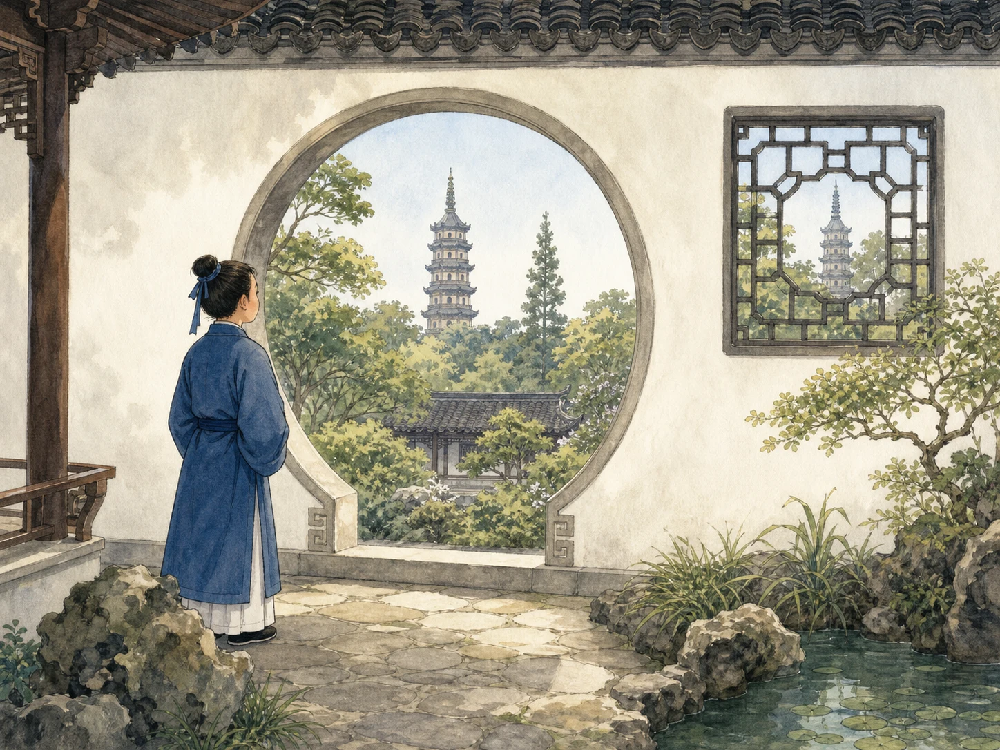
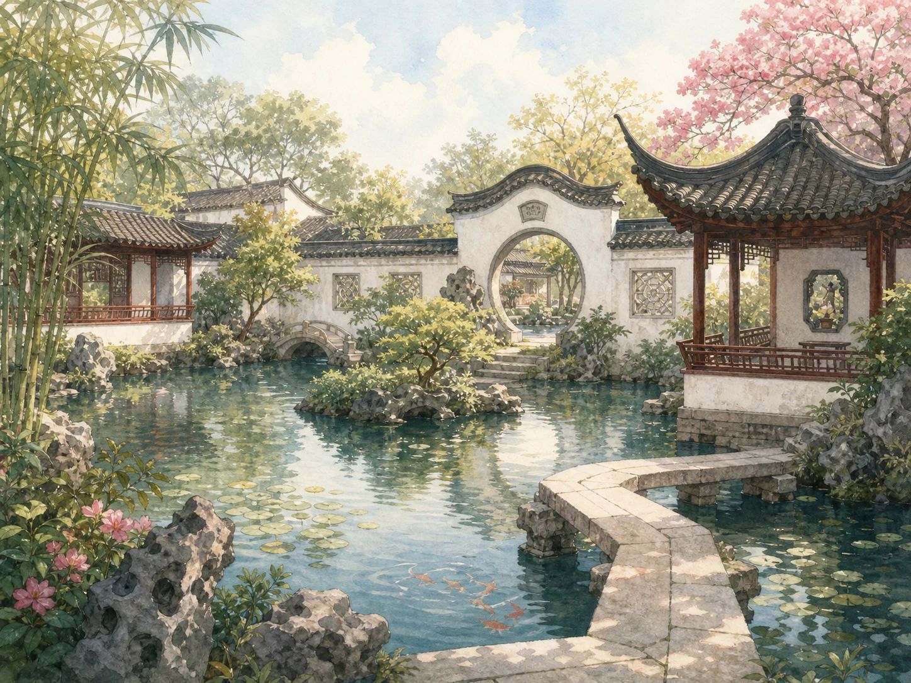

苏州园林：一步一景是怎样做出来的？
Suzhou Gardens: How Does Each Step Reveal a New View?
阅读难度 · 困难Reading level · Hard
Page 1
往旁边走一步，塔不见了
Step Sideways, and the Pagoda Disappears

This modern imagined scene uses one pagoda in two openings to explain framing. It is not a measured view from a real Suzhou garden.
假如你站在一扇圆形门洞前，远处的塔正好落在圆框中央。屋檐、近处的树和远塔叠在一起，像一幅有前景、有背景的画。可是你往旁边走一步，塔就被墙挡住了。
塔当然没有被“借”走。改变的是你站的位置，以及墙、门洞、近景和远景之间的关系。这种让园外景物参与园内画面的办法，常被叫作“借景”。它不等于随便开一扇窗，把能看见的东西都算进园里；设计者要考虑从哪里看、露出多少、用什么近景相接，还要考虑树长高以后和城外建筑改变以后会发生什么。
一个洞口只是故事的开头。真正的苏州园林不是一张停住的照片，而是一段要用脚走、用眼寻找的空间。下一扇门会遮住什么？转过弯以后又会出现什么？
Imagine standing in front of a round opening. A distant pagoda sits neatly in the center. A roof edge, a nearby tree, and the faraway tower form layers, almost like the foreground and background of a picture. Then you step sideways, and the wall hides the pagoda.
Of course, the tower was never really “borrowed.” What changed was the relationship among your viewing spot, the wall, the opening, and the near and distant scenery. This way of letting something outside join a view inside is called borrowed scenery. It is not as simple as cutting a window and claiming everything beyond it. A garden maker considers where a viewer might stand, how much to reveal, and how the foreground connects to the distance. Growing trees and new city buildings can change the view later.
One opening is only the beginning. A Suzhou garden is not a frozen photograph. It is a space you explore with your feet and eyes. What will the next doorway hide? What will appear after the path turns?
Page 2
九座园林，九段不同的历史
Nine Gardens, Nine Different Histories

This modern composite gathers ponds, a curved bridge, pavilions, windows, and rocks. It is not the plan of one real garden.
“苏州园林”很容易让人以为，这是一座大园子，或者是一种照着配方复制的风格。其实苏州城内外有许多园林，各有名字、地点、年代和曲折经历。联合国教科文组织分两次列入世界遗产的“苏州古典园林”，指的是九座代表性园林，不是苏州所有花园的总称。
沧浪亭的历史可以追到十一世纪；拙政园始建于1509年前后；留园的前身始建于1593年，后来又被不同主人改建；网师园面积不大，却把住宅和水院安排得很紧密。拙政园以开阔水面见长，留园以变化丰富的院落、长廊和峰石著名，环秀山庄则以精密的叠山受到重视。石、水、植物和建筑都会出现，可它们的比例、路线和性格并不相同。
园名和建筑也不是永远不变。买卖、继承、战争、荒废和修复，会让一座园分开或合并，让房屋改变用途，让植物长大或死亡。今天走进的名园，是很多历史阶段重叠后的结果，不能只归给一位“天才设计师”。
The name “Suzhou gardens” can sound like one enormous park or one style copied from a recipe. In fact, Suzhou has many named gardens in different places, built and changed at different times. The UNESCO World Heritage property called the Classical Gardens of Suzhou includes nine representative gardens added in two stages. It does not mean every garden in Suzhou is one World Heritage site.
The history of Canglang Pavilion reaches back to the eleventh century. The Humble Administrator's Garden began around 1509. The garden that became Lingering Garden began in 1593 and was rebuilt by later owners. The much smaller Master-of-Nets Garden tightly joins a residence to a water garden. Broad water shapes the Humble Administrator's Garden; varied courtyards, long corridors, and famous standing stones mark Lingering Garden; an intricate artificial mountain makes the Mountain Villa with Embracing Beauty distinctive. Rocks, water, plants, and buildings may appear in all of them, but not in the same amounts or arrangements.
Names and structures did not remain fixed. Sale, inheritance, war, neglect, and repair could divide a garden, join sections, change a room's use, or replace dead plants. The famous gardens we visit now contain many historical layers. They cannot be credited to one brilliant designer working in a single moment.
Page 3
谁的园子？谁把它造出来？
Whose Garden? Who Actually Built It?
现存名园大多来自有钱、有地、有社会地位的家庭。园主人可能是退休或失意的官员，也可能是富商和收藏家。他们在园里居住、待客、读书、写诗、看戏，也借园名、匾额、书画和奇石表现自己的志趣与身份。这样的私家园林不是普通百姓都能拥有的“后院”，更不是整座城市共同的家。
有些园主人懂诗画，艺术家也会为园景作画或题字。拙政园就和画家文徵明关系密切，他在1551年画过园景。不过，“文徵明画过园子”不等于现存每条路都由他画成蓝图；苏州园林管理部门也把“请他设计”写作传说，而不是确定事实。
而且，想法不能自己变成池塘、屋顶和假山。造园需要懂空间与工程的园匠，需要叠石师傅、木匠、瓦匠、泥水匠、雕刻匠和种植花木的人，也需要挖池、运土、抬石和长期清扫修剪的劳动者。史书和园记常把园主的名字放得最大，许多真正动手者却没有留下姓名。看园时记住他们，画面才完整。
Most surviving famous gardens came from families with money, land, and social position. An owner might be a retired or disappointed official, a merchant, or a collector. Families lived there, received guests, read, wrote poetry, enjoyed performances, and used names, plaques, paintings, and rare rocks to express taste and status. These private gardens were not ordinary backyards that every family could own. They were not the shared home of an entire city.
Some owners knew painting and poetry, and artists made pictures or inscriptions connected to the gardens. The painter Wen Zhengming, for example, knew the Humble Administrator's Garden and painted views of it in 1551. But “he painted the garden” does not prove that every surviving path follows a master plan he drew. Even Suzhou's garden administration labels the story that he designed its blueprint as a tradition, not a settled fact.
Ideas also cannot turn themselves into ponds, roofs, and artificial hills. A garden required experienced garden makers, rock specialists, carpenters, tile workers, masons, carvers, and plant growers. Other workers dug ponds, hauled earth, lifted stones, swept paths, and pruned plants year after year. Old records often make the owner's name large while leaving many workers unnamed. Remembering those hands gives us a fuller picture.
Page 4
石头有地质，也有人作出的选择
A Garden Rock Is Geology Plus Human Choice

This modern reference image shows a porous display rock. Shape alone cannot prove its source, age, or whether every opening is untouched by tools.
太湖石是一类著名的石灰岩观赏石，名字来自苏州附近的太湖地区。含有微弱酸性的水会慢慢溶解石灰岩，风化和水流也会扩大裂缝，形成凹槽、孔洞和起伏的表面。赏石者后来常用“瘦、漏、透、皱”一类词来谈喜欢的形态：轮廓挺拔、孔道相通、表面多变化。
但是，“天然形成”不等于“自己站进花园”。人要寻找和采集石头，把它运来，决定正面和角度，选择单独竖成一峰，还是让叠山师傅把许多石块组合成洞谷与山径。园林中也会使用黄石等其他石材，并不是每座假山都由太湖石堆成。石头的地质形状与人的挑选、加工和摆放共同形成了眼前的景观。
也不能看见洞，就断定每一个洞都只由湖水冲出。历史资料记载过把旱石加工、再沉入水中冒充水石的做法；现代市场也有钻孔和打磨。我们不必因此怀疑每块古石，却要学会把几个问题分开：石灰岩怎样形成孔洞？这块石头从哪里来？人后来又对它做了什么？这些问题需要不同证据。
Taihu stone is a famous kind of limestone display rock named for the Lake Tai region near Suzhou. Slightly acidic water slowly dissolves limestone, while weather and moving water enlarge cracks and create grooves, openings, and uneven surfaces. Rock lovers later used words such as “lean,” “perforated,” “open,” and “wrinkled” to discuss forms they admired.
Yet “formed by nature” does not mean “walked into the garden by itself.” People searched for and collected rocks, transported them, selected a front and an angle, and decided whether one stone should stand like a peak or many pieces should become a constructed mountain with paths and caves. Garden makers also used yellow stone and other rock types. Not every artificial hill is a heap of Taihu stone. Geology and human decisions work together in the scene we see.
Nor can we look at a hole and declare that lake water alone made every part of it. Historical accounts describe dry rocks being worked and then placed in water to imitate more valued lake stones. Modern sellers may drill or grind rocks too. That does not make every old stone suspicious. It teaches us to separate three questions: How can limestone develop holes? Where did this particular rock come from? What did people later do to it? Each question needs different evidence.
Page 5
路不是最短的，眼睛也不会一次看完
The Path Is Not Shortest, and the Eye Cannot See Everything at Once
在城市里赶路，我们常常希望从A点直走到B点。园林小路却会转弯，廊子会先挡住池塘，再从一扇漏窗露出一角。你走出较窄、较暗的过道，前方忽然变成明亮的水院；登上几级台阶，刚才仰看的石峰又出现在脚下。变化不一定来自“走了一步”，更来自位置、高低、光线、遮挡和季节一起改变。
有人把这种游园经验比作展开山水手卷。手卷不是把整幅画一次挂在墙上，而是从一端慢慢展开；园林也让景物按行走顺序出现。这个比喻很有帮助，因为中国绘画、诗文和园林确实长期互相影响。但它仍然是解释，不是所有园林的统一施工说明书。园子可能有多条路线，不同来客会停在不同地方，几个世纪的改建也会改变原来的观看顺序。
所谓“移步换景”因此不是一个保证每迈一步都出现完美画框的魔术口号。它提醒我们注意连续经验：设计者和工匠怎样藏住、泄露、连接和对照景物；走园的人又怎样用自己的速度，把这些片段组成一次游览。
When crossing a city, we often want the shortest line from A to B. A garden path may turn instead. A corridor can hide a pond and then reveal one corner through a patterned window. You leave a narrow, dim passage and suddenly enter a bright water court. After climbing a few steps, a rock you once looked up at may appear below you. The change does not come from “one step” alone. Position, height, light, screens, and season change together.
People sometimes compare this experience to opening a landscape handscroll. A handscroll is not displayed all at once like a poster. A viewer unrolls it section by section, just as garden scenes can appear in sequence while a visitor walks. The comparison is useful because painting, poetry, and garden arts influenced one another for centuries. Still, it is an interpretation - not one instruction sheet followed by every garden maker. A garden may have several routes, visitors pause in different places, and centuries of rebuilding can alter the order of views.
The phrase “a changing view with every step” is not a magic promise that every footstep produces a perfect picture frame. It asks us to notice a connected experience: how makers hide, reveal, join, and contrast scenes, and how each visitor's pace turns those pieces into a journey.
Page 6
保存的不是一张古代照片
Preservation Is Not Freezing One Ancient Picture
二十世纪中期，一些原来的私家宅园由国家接收或由后人捐献。已经荒芜、损坏的园林需要测绘、清理和修复，后来才成为公众可以参观的文化遗产。留园在1953年修复时，就有园林专家和古建工人参加；网师园经过整修后，于1958年开放。今天的游客身份和古代园主、家人、客人或仆役都不同，使用园林的方式也已经改变。
1997年，拙政园、留园、网师园和环秀山庄先列入世界遗产；2000年又增加沧浪亭、狮子林、艺圃、耦园和退思园。保护的不只是漂亮亭子，还包括假山、古树、匾额、家具，以及与园林相连的街巷、河道和周边视线。远处新建一座高楼，可能破坏借景；太多脚步，也会磨损地面和建筑。
修复还要面对选择：哪一段历史最清楚？哪些材料还能保留？怎样让新补的部分不假装成从未损坏过？联合国教科文组织强调依据档案、传统技术、环境控制和尽量少干预来管理。所谓保存，不是把园林冻在某位园主生活的一天，而是诚实地照顾它已经积累的许多层历史。
In the mid-1900s, the government took charge of some former private gardens, while other families donated theirs. Gardens that had become damaged or overgrown had to be measured, cleared, and repaired before the public could visit them as heritage sites. Experts and skilled building workers helped restore Lingering Garden in 1953. Master-of-Nets Garden reopened after repairs in 1958. A modern visitor uses these places differently from an old owner, family member, guest, servant, or worker.
In 1997, the Humble Administrator's Garden, Lingering Garden, Master-of-Nets Garden, and Mountain Villa with Embracing Beauty entered the World Heritage List. Five more were added in 2000: Canglang Pavilion, Lion Grove Garden, Garden of Cultivation, Couple's Garden Retreat, and Retreat and Reflection Garden. Preservation includes more than pretty pavilions. It also covers rockeries, old trees, plaques, furniture, and parts of the surrounding streets, canals, and views. A new tower nearby can damage borrowed scenery, while too many footsteps can wear down floors and buildings.
Repair brings choices. Which layer of history is well documented? Which old materials can remain? How can a new repair avoid pretending that nothing was ever damaged? UNESCO's guidance emphasizes records, traditional skills, control of the surrounding setting, and limited intervention. Preservation does not freeze a garden on one day in one owner's life. It cares honestly for the many layers already there.
再回到那扇圆门
Return to the Round Opening
现在回到开头的圆门。塔出现在框里，不是因为园林把远方占为己有，而是近景、远景、建筑和观看者在这一刻形成了联系。你移动，关系也跟着改变。
一座苏州园林的丰富，也不是靠“池塘加太湖石加花窗”这张配方。它来自一块具体的土地、一次次改建、园主的资源与愿望、许多工匠和劳动者的技术，以及后来保护者做出的选择。
下一次走园林，可以慢一点。不要只寻找最像明信片的画面，也看看墙刚刚藏住了什么、石头怎样被安放、路为什么转弯，并问一问：今天看到的这一层，是谁在什么时候留下的？
Return to the round opening from the beginning. The pagoda appears inside its frame not because the garden owns the distance, but because foreground, background, architecture, and viewer meet for a moment. When you move, the relationship changes.
A Suzhou garden's richness does not come from a recipe of “pond plus Taihu rocks plus patterned windows.” It grows from a particular piece of land, repeated rebuilding, an owner's money and wishes, the skill of many makers and workers, and the choices of later caretakers.
If you visit a garden, slow down. Do not look only for the most postcard-like picture. Notice what the wall has just hidden, how a rock was positioned, and why the path turned. Then ask: Who left this layer here, and when?